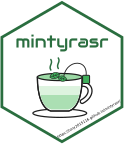

mintyrasr 
Overview
mintyrasr runs GBLUP parameter estimation and cross-validation with ASReml-R directly on the nested data built by mintyr - no input files have to be exported.
phenotypes ─► mintyr::cv_scenarios() ─► asr_scenarios() / asr_gblup() ─► varcomp · h2 · rg · rp · PA · accuracy · slope ─► xlsx-
Four (five) scenarios in one call: single-trait / two-trait x single group / groups combined, plus one trait as a different trait per group (
mt_bt, G x E). -
Genetic parameters that follow the model: h2, rg and rp are built from the names of the variance components, not from fixed
V1,V2, … positions, so they stay right when you add random effects (~ ide(id) + litter) or change structures (us,idh,corv,corh,corgh). Thevc_indextable shows whichVis which component. -
Correct tests: LRT of rg = 0 against
idh(trait)withboundary = FALSE; optional joint test of all covariances. - Three ways to treat variance components in cross-validation: fixed at the full-data estimates (fast), warm-started, or re-estimated per fold (no leakage).
-
Per fold: predictive ability
r(y, GEBV), accuracyPA / sqrt(h2), slopeb(y ~ GEBV)on all validation individuals (no reliability filter); final GEBVs with reliability1 - PEV / ((1 + F) Va). -
Pedigree, genomic or single-step: pass A^-1, G^-1 or H^-1; compare them on the same folds with
asr_compare(). - More than the animal model: repeatability, litter, maternal genetic and environment effects, G x E, with their variance proportions.
-
Parameters only:
cv = NULLgives h2, rg, rp for every group or trait pair without cross-validation. -
Safe long runs: progress and time left,
update()for fits that have not converged, non-converged fits skipped and every problem recorded in$logwithout stopping the loop.
Installation
ASReml-R 4 (licensed, from VSNi) must be installed first.
# install.packages("pak")
pak::pak("tony2015116/mintyrasr")Example
library(asreml)
library(mintyr)
library(mintyrasr)
sc <- cv_scenarios(pheno, cols = c("adg", "bf", "fcr"), id = "id",
group = "test_herd", v = 5, repeats = 5, seed = 2026,
out_type = "df")
res <- asr_scenarios(sc, ginv, fixed = ~ hhys, inbreeding = inbreeding,
dir = "results") # st_sp_ginv.xlsx, st_mp_ginv.xlsx, ...
res$mt_sp$param # h2, rg, rp (+ SE), rg_p, formulas used
res$mt_sp$summary # PA, accuracy, slope: n, mean, sd, se概述
mintyrasr 直接在 mintyr 生成的嵌套数据上，用 ASReml-R 完成 GBLUP 参数估计和交叉验证，无需导出任何输入文件。
一次跑完所有场景：单性状 / 两性状 × 单群体 / 多群体，以及同一性状在不同群体当作不同性状（
mt_bt，G×E）。遗传参数跟着模型走：h2、rg、rp 按方差组分的名字自动生成 vpredict 公式，不再写死
V1、V2……； 加随机效应（~ ide(id) + litter）或换结构（us、idh、corv、corh、corgh）都不会算错，vc_index表列出每个 V 对应的组分。检验正确：rg = 0 用
idh(trait)对照、boundary = FALSE；可选所有协方差的联合检验。交叉验证中方差组分三种处理：固定为全数据估计值（快）、以全数据为初值重估、每折完全重估（无信息泄漏）。
每折输出：在全部验证个体上（不按可靠性过滤）计算预测能力
r(y, GEBV)、准确性PA / sqrt(h2)、回归系数b(y ~ GEBV)；最终 GEBV 附可靠性1 - PEV / ((1 + F) Va)。系谱、基因组或一步法：传入 A⁻¹、G⁻¹ 或 H⁻¹；用
asr_compare()在同一套分折上比较。不止动物模型：重复力、窝效应、母体遗传与母体环境效应、基因型×环境互作，并给出各方差比例。
只估计参数：
cv = NULL时，不做交叉验证，直接给出每个群体或每对性状的 h2、rg、rp。安全的长时间运行：显示进度和剩余时间；未收敛模型自动
update()；仍不收敛则跳过，所有问题记入$log，循环不中断。